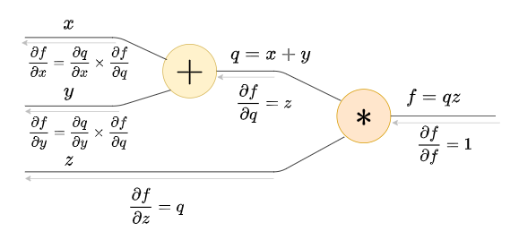

Derive basic gradient update (not descent) rule.
y new ≈ y old + d y d x Δ x y^{\text{new}} \approx y^{\text{old}} + \dfrac{dy}{dx} \Delta x
y new ≈ y old + d x d y Δ x
f : R → R f: \mathbb{R} \to \mathbb{R} f : R → R
f ′ ( x ) = lim h → 0 f ( x + h ) − f ( x ) h f'(x) = \lim_{h \to 0} \dfrac{f(x+h) - f(x)}{h}
f ′ ( x ) = h → 0 lim h f ( x + h ) − f ( x )
f ′ ( x ) = d f ( x ) d x = d y d x = lim h → 0 f ( x + h ) − f ( x ) h f'(x) = \dfrac{d f(x)}{dx} = \dfrac{dy}{dx} = \lim_{h \to 0} \dfrac{f(x+h) - f(x)}{h}
f ′ ( x ) = d x d f ( x ) = d x d y = h → 0 lim h f ( x + h ) − f ( x )
f ( x + h ) ≅ f ′ ( x ) h + f ( x ) f(x+h) \cong f'(x) h + f(x)
f ( x + h ) ≅ f ′ ( x ) h + f ( x )
f ( x + Δ x ) ≅ f ′ ( x ) Δ x + f ( x ) f(x+\Delta x) \cong f'(x) \Delta x + f(x)
f ( x + Δ x ) ≅ f ′ ( x ) Δ x + f ( x )
f ( x + Δ x ) ≅ ∂ y ∂ x Δ x + f ( x ) f(x+\Delta x) \cong \dfrac{\partial y}{\partial x} \Delta x + f(x)
f ( x + Δ x ) ≅ ∂ x ∂ y Δ x + f ( x )
y new ≅ ∂ y ∂ x Δ x + y old y^{\text{new}} \cong \dfrac{\partial y}{\partial x} \Delta x + y^{\text{old}}
y new ≅ ∂ x ∂ y Δ x + y old
x new → x old + Δ x x^{\text{new}} \rightarrow x^{\text{old}} + \Delta x
x new → x old + Δ x
y new ≈ y old + d y d x Δ x y^{\text{new}} \approx y^{\text{old}} + \dfrac{dy}{dx} \Delta x
y new ≈ y old + d x d y Δ x
"If x x x Δ x \Delta x Δ x y y y d y d x ⋅ Δ x \dfrac{dy}{dx} \cdot \Delta x d x d y ⋅ Δ x
Give a high level proof of the chain rule.
∂ z ∂ x = ∂ z ∂ y ⋅ ∂ y ∂ x \dfrac{\partial z}{\partial x} = \dfrac{\partial z}{\partial y} \cdot \dfrac{\partial y}{\partial x}
∂ x ∂ z = ∂ y ∂ z ⋅ ∂ x ∂ y
z = f ( g ( x ) ) z = f\big(g(x)\big)
z = f ( g ( x ) )
x → g y → f z x \xrightarrow[]{g} y \xrightarrow[]{f} z
x g y f z
x new → x old + Δ x ⟹ y new → y old + ∂ y ∂ x Δ x x^{\text{new}} \to x^{\text{old}} + \Delta x \implies y^{\text{new}} \to y^{\text{old}} + \dfrac{\partial y}{\partial x} \Delta x
x new → x old + Δ x ⟹ y new → y old + ∂ x ∂ y Δ x
Δ y = ∂ y ∂ x Δ x \Delta y = \dfrac{\partial y}{\partial x} \Delta x Δ y = ∂ x ∂ y Δ x
y new → y old + Δ y ⟹ z new → z old + ∂ z ∂ y Δ y y^{\text{new}} \to y^{\text{old}} + \Delta y \implies z^{\text{new}} \to z^{\text{old}} + \dfrac{\partial z}{\partial y} \Delta y
y new → y old + Δ y ⟹ z new → z old + ∂ y ∂ z Δ y
z new ≈ z old + ∂ z ∂ y ∂ y ∂ x Δ x z^{\text{new}} \approx z^{\text{old}} + \dfrac{\partial z}{\partial y} \dfrac{\partial y}{\partial x} \Delta x
z new ≈ z old + ∂ y ∂ z ∂ x ∂ y Δ x
⟹ ∂ z ∂ x = ∂ z ∂ y ⋅ ∂ y ∂ x \implies
\dfrac{\partial z}{\partial x} = \dfrac{\partial z}{\partial y} \cdot \dfrac{\partial y}{\partial x}
⟹ ∂ x ∂ z = ∂ y ∂ z ⋅ ∂ x ∂ y
Gradient - Vector input, Scalar output
f : R N → R f: \mathbb{R}^N \to \mathbb{R} f : R N → R
f ( [ x 1 x 2 ] ) = y f\left(\begin{bmatrix} x_1 \\ x_2 \end{bmatrix}\right) = y
f ( [ x 1 x 2 ] ) = y
x n e w → x o l d + Δ x x^{new} \to x^{old} + \Delta x x n e w → x o l d + Δ x
gradient = ( ∂ y ∂ x 1 , ∂ y ∂ x 2 , … ) \text{gradient} = \left(\dfrac{\partial y}{\partial x_1}, \dfrac{\partial y}{\partial x_2}, \dots\right) gradient = ( ∂ x 1 ∂ y , ∂ x 2 ∂ y , … )
∂ y ∂ x ⋅ Δ x = ∂ y ∂ x 1 ⋅ Δ x 1 + ∂ y ∂ x 2 ⋅ Δ x 2 + … + ∂ y ∂ x n ⋅ Δ x n \dfrac{\partial y}{\partial x} \cdot \Delta x = \dfrac{\partial y}{\partial x_1} \cdot \Delta x_1 + \dfrac{\partial y}{\partial x_2} \cdot \Delta x_2 + \ldots + \dfrac{\partial y}{\partial x_n} \cdot \Delta x_n
∂ x ∂ y ⋅ Δ x = ∂ x 1 ∂ y ⋅ Δ x 1 + ∂ x 2 ∂ y ⋅ Δ x 2 + … + ∂ x n ∂ y ⋅ Δ x n
y n e w ≈ y o l d + ∂ y ∂ x ⋅ Δ x y^{new} \approx y^{old} + \dfrac{\partial y}{\partial x} \cdot \Delta x y n e w ≈ y o l d + ∂ x ∂ y ⋅ Δ x
Jacobian - Vector input, Vector output
f : R N → R M f : \mathbb{R}^N \to \mathbb{R}^M f : R N → R M
f ( [ x 1 x 2 ] ) = [ y 1 y 2 y 3 ] f\left(\begin{bmatrix}x_1 \\ x_2\end{bmatrix}\right) = \begin{bmatrix}y_1 \\ y_2 \\ y_3\end{bmatrix}
f ( [ x 1 x 2 ] ) = ⎣ ⎢ ⎡ y 1 y 2 y 3 ⎦ ⎥ ⎤
The Jacobian is defined as:
∂ y ∂ x = [ ∂ y 1 ∂ x 1 … ∂ y 1 ∂ x N ⋮ ⋱ ⋮ ∂ y M ∂ x 1 … ∂ y M ∂ x N ] \dfrac{\partial y}{\partial x} =
\begin{bmatrix}
\dfrac{\partial y_1}{\partial x_1} & \dots & \dfrac{\partial y_1}{\partial x_N} \\
\vdots & \ddots & \vdots \\
\dfrac{\partial y_M}{\partial x_1} & \dots & \dfrac{\partial y_M}{\partial x_N}
\end{bmatrix}
∂ x ∂ y = ⎣ ⎢ ⎢ ⎢ ⎢ ⎢ ⎡ ∂ x 1 ∂ y 1 ⋮ ∂ x 1 ∂ y M … ⋱ … ∂ x N ∂ y 1 ⋮ ∂ x N ∂ y M ⎦ ⎥ ⎥ ⎥ ⎥ ⎥ ⎤
x new → x old + Δ x ⟹ y new ≈ y old + d y d x Δ x x^{\text{new}} \to x^{\text{old}} + \Delta x \implies y^{\text{new}} \approx y^{\text{old}} + \dfrac{dy}{dx} \Delta x
x new → x old + Δ x ⟹ y new ≈ y old + d x d y Δ x
d y d x Δ x \dfrac{dy}{dx} \Delta x d x d y Δ x
Generalized Jacboian, Tensor input, Tensor output
Definitions
f : R N x × … × N x → R f: \mathbb{R}^{N_x \times \ldots \times N_x} \to \mathbb{R} f : R N x × … × N x → R
f ( M 1 , x … M D y ) f\left(M_{1,x} \ldots M_{D_y}\right) f ( M 1 , x … M D y )
f ( Dx-dimensional tensor ) = Dy-dimensional tensor f\left(\text{Dx-dimensional tensor}\right) = \text{Dy-dimensional tensor} f ( Dx-dimensional tensor ) = Dy-dimensional tensor
Transformations
x new → x old + Δ x x^{\text{new}} \to x^{\text{old}} + \Delta x x new → x old + Δ x
Tensor sum
y new ≈ y old + ∂ y ∂ x Δ x y^{\text{new}} \approx y^{\text{old}} + \dfrac{\partial y}{\partial x} \Delta x y new ≈ y old + ∂ x ∂ y Δ x
Generalized Jacobian
Tensor product : ∂ y ∂ x Δ x \dfrac{\partial y}{\partial x} \Delta x ∂ x ∂ y Δ x ( M 1 , x … M D y ) × ( N 1 , x … N D x ) \left(M_{1,x} \ldots M_{D_y}\right) \times \left(N_{1,x} \ldots N_{D_x}\right) ( M 1 , x … M D y ) × ( N 1 , x … N D x )
Scalar Backprop Computation Graph

In the below generalized Jacobian, determine the dimensions of the Jacobian tensor.
y = x W y = xW y = x W ( N × M ) = ( N × D ) ⋅ ( D × M ) (N \times M) = (N \times D) \cdot (D \times M) ( N × M ) = ( N × D ) ⋅ ( D × M )
∂ ϕ ∂ x = ∂ ϕ ∂ y ⋅ ∂ y ∂ x \dfrac{\partial \phi}{\partial x} = \dfrac{\partial \phi}{\partial y} \cdot \dfrac{\partial y}{\partial x} ∂ x ∂ ϕ = ∂ y ∂ ϕ ⋅ ∂ x ∂ y
What are the dimensions of ∂ y ∂ x \dfrac{\partial y}{\partial x} ∂ x ∂ y
dim(y) = ( N × M ) \text{dim(y)} = (N \times M) dim(y) = ( N × M ) dim(x) = ( N × D ) \text{dim(x)} = (N \times D) dim(x) = ( N × D )
∂ y ∂ x \dfrac{\partial y}{\partial x} ∂ x ∂ y ( N × M × N × D ) (N \times M \times N \times D) ( N × M × N × D )
Why is the Jacobian Sparse? And what is the structure of the Jacobian?
Let’s explicitly calculate the Jacobian matrix for a simple example where:
N = 2 N = 2 N = 2 M = 2 M = 2 M = 2 D = 2 D = 2 D = 2 x ∈ R 2 × 2 x \in \mathbb{R}^{2 \times 2} x ∈ R 2 × 2 W ∈ R 2 × 2 W \in \mathbb{R}^{2 \times 2} W ∈ R 2 × 2 y = x W ⟹ y ∈ R 2 × 2 y = xW \implies y \in \mathbb{R}^{2 \times 2} y = x W ⟹ y ∈ R 2 × 2
Matrix Form:
x = [ x 11 x 12 x 21 x 22 ] , W = [ w 11 w 12 w 21 w 22 ] , y = x W = [ y 11 y 12 y 21 y 22 ] . x = \begin{bmatrix} x_{11} & x_{12} \\ x_{21} & x_{22} \end{bmatrix}, \quad
W = \begin{bmatrix} w_{11} & w_{12} \\ w_{21} & w_{22} \end{bmatrix}, \quad
y = xW = \begin{bmatrix} y_{11} & y_{12} \\ y_{21} & y_{22} \end{bmatrix}.
x = [ x 1 1 x 2 1 x 1 2 x 2 2 ] , W = [ w 1 1 w 2 1 w 1 2 w 2 2 ] , y = x W = [ y 1 1 y 2 1 y 1 2 y 2 2 ] .
Each element of y y y
y i j = ∑ k = 1 D x i k w k j . y_{ij} = \sum_{k=1}^{D} x_{ik} w_{kj}.
y i j = k = 1 ∑ D x i k w k j .
Jacobian Matrix Construction
The Jacobian ∂ y ∂ x \dfrac{\partial y}{\partial x} ∂ x ∂ y ∂ y i j ∂ x p q \dfrac{\partial y_{ij}}{\partial x_{pq}} ∂ x p q ∂ y i j x x x 4 4 4 y y y 4 4 4 4 × 4 4 \times 4 4 × 4 pairwise partial derivative ).
1. Partial derivatives:
y 11 = x 11 w 11 + x 12 w 21 y_{11} = x_{11}w_{11} + x_{12}w_{21} y 1 1 = x 1 1 w 1 1 + x 1 2 w 2 1
∂ y 11 ∂ x 11 = w 11 , ∂ y 11 ∂ x 12 = w 21 , ∂ y 11 ∂ x 21 = 0 , ∂ y 11 ∂ x 22 = 0. \dfrac{\partial y_{11}}{\partial x_{11}} = w_{11}, \quad \dfrac{\partial y_{11}}{\partial x_{12}} = w_{21}, \quad \dfrac{\partial y_{11}}{\partial x_{21}} = 0, \quad \dfrac{\partial y_{11}}{\partial x_{22}} = 0.
∂ x 1 1 ∂ y 1 1 = w 1 1 , ∂ x 1 2 ∂ y 1 1 = w 2 1 , ∂ x 2 1 ∂ y 1 1 = 0 , ∂ x 2 2 ∂ y 1 1 = 0 .
y 12 = x 11 w 12 + x 12 w 22 y_{12} = x_{11}w_{12} + x_{12}w_{22} y 1 2 = x 1 1 w 1 2 + x 1 2 w 2 2
∂ y 12 ∂ x 11 = w 12 , ∂ y 12 ∂ x 12 = w 22 , ∂ y 12 ∂ x 21 = 0 , ∂ y 12 ∂ x 22 = 0. \dfrac{\partial y_{12}}{\partial x_{11}} = w_{12}, \quad \dfrac{\partial y_{12}}{\partial x_{12}} = w_{22}, \quad \dfrac{\partial y_{12}}{\partial x_{21}} = 0, \quad \dfrac{\partial y_{12}}{\partial x_{22}} = 0.
∂ x 1 1 ∂ y 1 2 = w 1 2 , ∂ x 1 2 ∂ y 1 2 = w 2 2 , ∂ x 2 1 ∂ y 1 2 = 0 , ∂ x 2 2 ∂ y 1 2 = 0 .
Similar calculations hold for y 21 y_{21} y 2 1 y 22 y_{22} y 2 2
2. Jacobian matrix:
Organizing the partial derivatives, we get:
∂ y ∂ x = [ ∂ y 11 ∂ x 11 ∂ y 11 ∂ x 12 ∂ y 11 ∂ x 21 ∂ y 11 ∂ x 22 ∂ y 12 ∂ x 11 ∂ y 12 ∂ x 12 ∂ y 12 ∂ x 21 ∂ y 12 ∂ x 22 ∂ y 21 ∂ x 11 ∂ y 21 ∂ x 12 ∂ y 21 ∂ x 21 ∂ y 21 ∂ x 22 ∂ y 22 ∂ x 11 ∂ y 22 ∂ x 12 ∂ y 22 ∂ x 21 ∂ y 22 ∂ x 22 ] . \dfrac{\partial y}{\partial x} =
\begin{bmatrix}
\dfrac{\partial y_{11}}{\partial x_{11}} & \dfrac{\partial y_{11}}{\partial x_{12}} & \dfrac{\partial y_{11}}{\partial x_{21}} & \dfrac{\partial y_{11}}{\partial x_{22}} \\
\dfrac{\partial y_{12}}{\partial x_{11}} & \dfrac{\partial y_{12}}{\partial x_{12}} & \dfrac{\partial y_{12}}{\partial x_{21}} & \dfrac{\partial y_{12}}{\partial x_{22}} \\
\dfrac{\partial y_{21}}{\partial x_{11}} & \dfrac{\partial y_{21}}{\partial x_{12}} & \dfrac{\partial y_{21}}{\partial x_{21}} & \dfrac{\partial y_{21}}{\partial x_{22}} \\
\dfrac{\partial y_{22}}{\partial x_{11}} & \dfrac{\partial y_{22}}{\partial x_{12}} & \dfrac{\partial y_{22}}{\partial x_{21}} & \dfrac{\partial y_{22}}{\partial x_{22}}
\end{bmatrix}.
∂ x ∂ y = ⎣ ⎢ ⎢ ⎢ ⎢ ⎢ ⎢ ⎢ ⎢ ⎢ ⎡ ∂ x 1 1 ∂ y 1 1 ∂ x 1 1 ∂ y 1 2 ∂ x 1 1 ∂ y 2 1 ∂ x 1 1 ∂ y 2 2 ∂ x 1 2 ∂ y 1 1 ∂ x 1 2 ∂ y 1 2 ∂ x 1 2 ∂ y 2 1 ∂ x 1 2 ∂ y 2 2 ∂ x 2 1 ∂ y 1 1 ∂ x 2 1 ∂ y 1 2 ∂ x 2 1 ∂ y 2 1 ∂ x 2 1 ∂ y 2 2 ∂ x 2 2 ∂ y 1 1 ∂ x 2 2 ∂ y 1 2 ∂ x 2 2 ∂ y 2 1 ∂ x 2 2 ∂ y 2 2 ⎦ ⎥ ⎥ ⎥ ⎥ ⎥ ⎥ ⎥ ⎥ ⎥ ⎤ .
Substitute the values:
∂ y ∂ x = [ w 11 w 21 0 0 w 12 w 22 0 0 0 0 w 11 w 21 0 0 w 12 w 22 ] = ∂ y ∂ x = [ W T 0 0 W T ] \dfrac{\partial y}{\partial x} =
\begin{bmatrix}
w_{11} & w_{21} & 0 & 0 \\
w_{12} & w_{22} & 0 & 0 \\
0 & 0 & w_{11} & w_{21} \\
0 & 0 & w_{12} & w_{22}
\end{bmatrix}
=
\dfrac{\partial y}{\partial x} =
\begin{bmatrix}
W^T & 0 \\
0 & W^T
\end{bmatrix}
∂ x ∂ y = ⎣ ⎢ ⎢ ⎢ ⎡ w 1 1 w 1 2 0 0 w 2 1 w 2 2 0 0 0 0 w 1 1 w 1 2 0 0 w 2 1 w 2 2 ⎦ ⎥ ⎥ ⎥ ⎤ = ∂ x ∂ y = [ W T 0 0 W T ]
Why Are There Zero Entries?
The zero entries arise because each output y i j y_{ij} y i j only on the row i i i x x x
y 11 y_{11} y 1 1 x 11 x_{11} x 1 1 x 12 x_{12} x 1 2 x 21 x_{21} x 2 1 x 22 x_{22} x 2 2 Similarly, y 21 y_{21} y 2 1 x 21 x_{21} x 2 1 x 22 x_{22} x 2 2 x 11 x_{11} x 1 1 x 12 x_{12} x 1 2
This pattern of dependency leads to a block-diagonal structure , making the Jacobian very sparse.
How can we efficiently compute the Jacobian?
y = x W y = xW y = x W ( N × M ) = ( N × D ) ⋅ ( D × M ) (N \times M) = (N \times D) \cdot (D \times M) ( N × M ) = ( N × D ) ⋅ ( D × M )
What are the dimensions of ∂ y ∂ x \dfrac{\partial y}{\partial x} ∂ x ∂ y dim(y) = ( N × M ) \text{dim(y)} = (N \times M) dim(y) = ( N × M ) dim(x) = ( N × D ) \text{dim(x)} = (N \times D) dim(x) = ( N × D )
∂ y ∂ x \dfrac{\partial y}{\partial x} ∂ x ∂ y ( N × M × N × D ) (N \times M \times N \times D) ( N × M × N × D )
∂ ϕ ∂ x = ∂ ϕ ∂ y ⋅ ∂ y ∂ x \dfrac{\partial \phi}{\partial x} = \dfrac{\partial \phi}{\partial y} \cdot \dfrac{\partial y}{\partial x} ∂ x ∂ ϕ = ∂ y ∂ ϕ ⋅ ∂ x ∂ y ( N × D ) = ( N × M ) ⋅ ( N × M × N × D ) (N \times D) = (N \times M) \cdot (N \times M \times N \times D) ( N × D ) = ( N × M ) ⋅ ( N × M × N × D ) ( N × D ) = ( N × M ) ⋅ ( N ⋅ M × N ⋅ D ) (N \times D) = (N \times M) \cdot (N\cdot M \times N \cdot D) ( N × D ) = ( N × M ) ⋅ ( N ⋅ M × N ⋅ D )
∂ ϕ ∂ x = ∂ ϕ ∂ y ⋅ ∂ y ∂ x \dfrac{\partial \phi}{\partial x} = \dfrac{\partial \phi}{\partial y} \cdot \dfrac{\partial y}{\partial x}
∂ x ∂ ϕ = ∂ y ∂ ϕ ⋅ ∂ x ∂ y
( N × D ) ≠ ( N × M ) ⋅ ( N × M × N × D ) (N \times D) \not = (N \times M) \cdot (N \times M \times N \times D)
( N × D ) = ( N × M ) ⋅ ( N × M × N × D )
Since we can replace: ∂ y ∂ x = W T \dfrac{\partial y}{\partial x} = W^T ∂ x ∂ y = W T
( ∂ ϕ ∂ x ) i = ( ∂ ϕ ∂ y ) i W T , \left( \dfrac{\partial \phi}{\partial x} \right)_i = \left( \dfrac{\partial \phi}{\partial y} \right)_i W^T,
( ∂ x ∂ ϕ ) i = ( ∂ y ∂ ϕ ) i W T ,
( 1 × D ) = ( 1 × M ) ⋅ ( M × D ) . (1 \times D) = (1 \times M) \cdot (M \times D).
( 1 × D ) = ( 1 × M ) ⋅ ( M × D ) .
where ( ∂ ϕ ∂ y ) i \left( \dfrac{\partial \phi}{\partial y} \right)_i ( ∂ y ∂ ϕ ) i i i i i = 1 , … , N i = 1, \ldots, N i = 1 , … , N
This generalizes to batches of inputs since W T W^T W T i i i
∂ ϕ ∂ x = ∂ ϕ ∂ y W T \dfrac{\partial \phi}{\partial x} = \dfrac{\partial \phi}{\partial y} W^T
∂ x ∂ ϕ = ∂ y ∂ ϕ W T
( N × D ) = ( N × M ) ⋅ ( M × D ) . (N \times D) = (N \times M) \cdot (M \times D).
( N × D ) = ( N × M ) ⋅ ( M × D ) .
Easy way to see it is by walking through an example and realizing that we only really need W T W^T W T
x = [ x 11 x 12 x 21 x 22 ] , W = [ w 11 w 12 w 21 w 22 ] , y = x W = [ y 11 y 12 y 21 y 22 ] . x = \begin{bmatrix} x_{11} & x_{12} \\ x_{21} & x_{22} \end{bmatrix}, \quad W = \begin{bmatrix} w_{11} & w_{12} \\ w_{21} & w_{22} \end{bmatrix}, \quad y = xW = \begin{bmatrix} y_{11} & y_{12} \\ y_{21} & y_{22} \end{bmatrix}.
x = [ x 1 1 x 2 1 x 1 2 x 2 2 ] , W = [ w 1 1 w 2 1 w 1 2 w 2 2 ] , y = x W = [ y 1 1 y 2 1 y 1 2 y 2 2 ] .
∂ y ∂ x = [ w 11 w 21 0 0 w 12 w 22 0 0 0 0 w 11 w 21 0 0 w 12 w 22 ] \dfrac{\partial y}{\partial x} = \begin{bmatrix} w_{11} & w_{21} & 0 & 0 \\ w_{12} & w_{22} & 0 & 0 \\ 0 & 0 & w_{11} & w_{21} \\ 0 & 0 & w_{12} & w_{22} \end{bmatrix}
∂ x ∂ y = ⎣ ⎢ ⎢ ⎢ ⎡ w 1 1 w 1 2 0 0 w 2 1 w 2 2 0 0 0 0 w 1 1 w 1 2 0 0 w 2 1 w 2 2 ⎦ ⎥ ⎥ ⎥ ⎤
Also applies to:
∂ ϕ ∂ W = ∂ ϕ ∂ y ⋅ ∂ y ∂ W = x T ⋅ ∂ ϕ ∂ y \dfrac{\partial \phi}{\partial W} = \dfrac{\partial \phi}{\partial y} \cdot \dfrac{\partial y}{\partial W} = x^T \cdot \dfrac{\partial \phi}{\partial y}
∂ W ∂ ϕ = ∂ y ∂ ϕ ⋅ ∂ W ∂ y = x T ⋅ ∂ y ∂ ϕ
( D × M ) = ( N × D ) T ⋅ ( N × M ) (D \times M) = (N \times D)^T \cdot (N \times M)
( D × M ) = ( N × D ) T ⋅ ( N × M )
Summary
∂ ϕ ∂ x = ∂ ϕ ∂ y ⋅ W T \dfrac{\partial \phi}{\partial x} = \dfrac{\partial \phi}{\partial y} \cdot W^T
∂ x ∂ ϕ = ∂ y ∂ ϕ ⋅ W T
∂ ϕ ∂ W = x T ⋅ ∂ ϕ ∂ y \dfrac{\partial \phi}{\partial W} = x^T \cdot \dfrac{\partial \phi}{\partial y}
∂ W ∂ ϕ = x T ⋅ ∂ y ∂ ϕ
Can refer to The Matrix Cookbook for more rules.
Given an outupt vector and an input vector, what are the dimensions of the Jacobian?
y ∈ R m \mathbf{y} \in \mathbb{R}^m y ∈ R m
x ∈ R n \mathbf{x} \in \mathbb{R}^n x ∈ R n
∂ y ∂ x ∈ R m × n \dfrac{\partial \mathbf{y}}{\partial \mathbf{x}} \in \mathbb{R}^{m \times n} ∂ x ∂ y ∈ R m × n